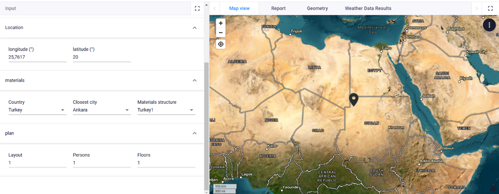

Digital concept
The digital design concept covers the user interface (UI), the parametric model, a material database based on local availability, and, crucially, the communication between all these components, often the most challenging part of the process.To achieve this, I used a range of software programs, including:
- Interface:
- VIKTOR SDK v14.15.2 (a quick set up of the interface and in combination with hops the communication between the interface and Grasshopper)
- For more information see their website.
- Python 3.10.3
- VIKTOR SDK v14.15.2 (a quick set up of the interface and in combination with hops the communication between the interface and Grasshopper)
- Database
- Excel
- Parametic model and calculations
- Grasshopper: Parametric model
- Karamba3D 2.2.0.15: Structural analysis
- Ladybug 1.8.0: Weather data (e.g. wind and temperature)
- Python 2.7: Custom scripting
- Optimization
- Galapagos/ octopus (plugin in Grashopper)
Below is a diagram of the intended concept of how all components come together:
.jpg)
Once a material is selected, its properties are retrieved from an Excel database and combined with the user’s other inputs and predefined parameters to generate a complete parametric model. This model undergoes structural optimization using Galapagos or Octopus, seeking an efficient balance between performance and resource use.
From there, two versions of the model are produced: a simplified version for immediate visualization within the UI, and a detailed version prepared for CNC fabrication. The CNC version is nested within material sheet boundaries and converted into downloadable files, alongside a material shopping list and assembly instructions.
In the time available, I was able to develop the application to the point where a basic model could be visualized in the user interface based on the user’s input for location and material, and the necessary initial calculations could be performed.
